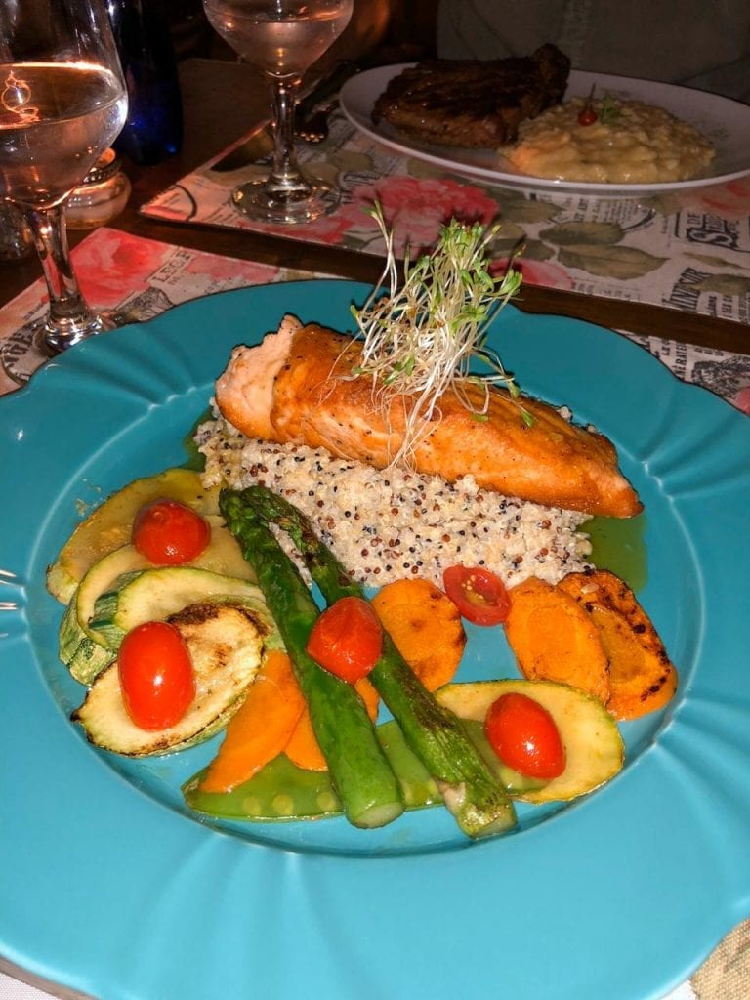
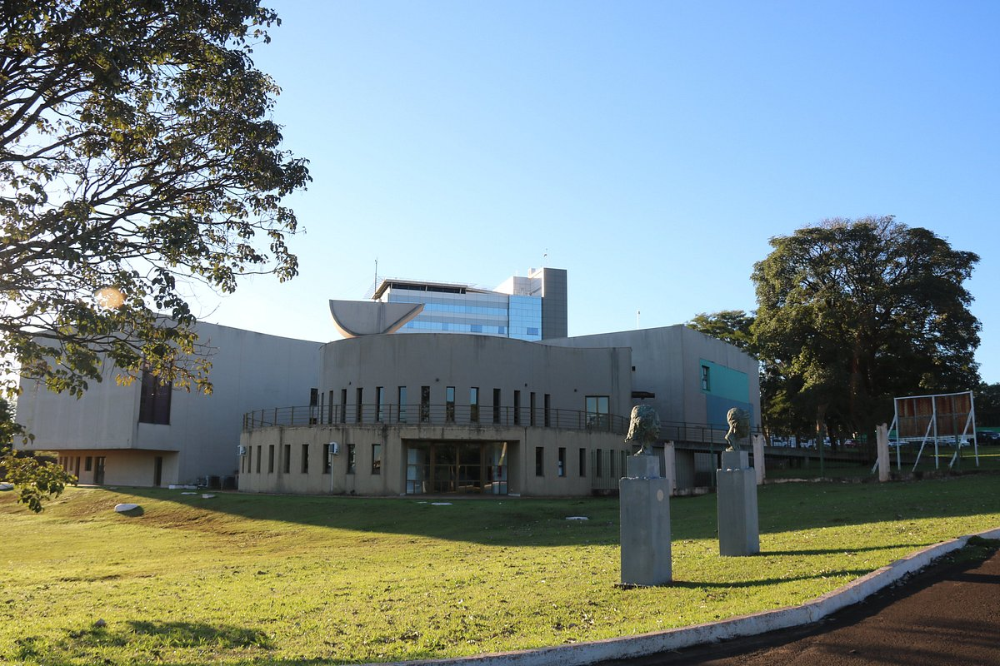

Campo Grande

Campo Grande, capital do estado de Mato Grosso do Sul, é um importante destino turístico da região Centro-Oeste do Brasil. A cidade é conhecida por ser o portal de entrada para o Pantanal, uma das maiores e mais biodiversas planícies alagáveis do mundo, além de ter proximidade com outros destinos turísticos relevantes como a Serra da Bodoquena e Bonito, que atraem turistas interessados em ecoturismo, turismo de aventura e observação da fauna e flora locais.
Além disso, Campo Grande tem se destacado por sua crescente infraestrutura para o turismo, com opções de lazer, cultura e gastronomia. A cidade mistura a modernidade de um centro urbano com o charme da vida no interior, oferecendo uma rica experiência cultural e um contato próximo com a natureza. Sua culinária típica, influenciada por várias culturas, e suas festas tradicionais, como a Festa Junina, também são atrativos que aumentam seu apelo turístico.
Principais pontos turísticos
- Parque das Nações Indígenas
- Mercado Municipal de Campo Grande
- Horto Florestal
- Monumento da Imigração Japonesa
- Obelisco
O Parque das Nações Indígenas é um dos maiores e mais visitados parques urbanos da cidade. Ele oferece uma vasta área verde com lagoas, espaços para caminhadas, áreas para piqueniques e a presença de diversas espécies de fauna e flora, além de ser um excelente ponto para atividades ao ar livre.
O parque também abriga o Museu das Culturas Dom Bosco, que apresenta exposições sobre a cultura indígena e regional, além de ser um ponto central de lazer e relaxamento para os moradores e turistas.
O Mercado Municipal é um dos principais pontos de compras e gastronomia de Campo Grande, sendo um local ideal para experimentar produtos típicos da região, como carnes, peixes, queijos e doces. O ambiente também é caracterizado pela presença de vendedores tradicionais e pela arquitetura típica.
O Mercado Municipal é uma parada obrigatória para quem deseja conhecer mais sobre a culinária sul-mato-grossense, além de ser um ponto de encontro cultural para os visitantes.
O Horto Florestal é uma área de preservação ambiental e lazer que possui uma grande variedade de plantas nativas e exóticas, além de um espaço para caminhadas, pedaladas e atividades de recreação.
Este é um dos locais mais tranquilos da cidade, oferecendo aos visitantes a oportunidade de se conectar com a natureza em pleno centro urbano.
Instalada em 1979, a obra de Choji Oykawa reproduz a maquete de uma típica casa japonesa. Foi construída em homenagem aos 70 anos da imigração dos japoneses em Campo Grande.
O Monumento da Imigração Japonesa está fixado na Praça da República, popularmente conhecida como Praça do Rádio Clube, no Centro da cidade.
O Obelisco (inaugurado em 1933), foi projetado pelo Engenheiro Newton Cavalcante e erguido em homenagem aos fundadores da cidade de Campo Grande. A construção possui um medalhão com a efígie do fundador José Antônio Pereira. É tombado como patrimônio histórico do município.
Fica localizado na Avenida Afonso Pena com a Rua José Antônio no Centro da cidade.
Principais pontos gastronômicos
- Cantina Masseria
- Localização: Jardim dos Estados.
- Cantina Romana
- Localização: Jardim dos Estados.
- Les Amis Bistrô 
- Localização: Centro de Campo Grande.
- Pietro i Maria
- Localização: Jardim dos Estados.
A Cantina Masseria está presente na cidade desde 1996. Com localização privilegiada, o restaurante comporta até 170 pessoas, possuindo também área para fumantes e espaço para reservas. É uma ótima opção para quem aprecia uma boa massa de fabricação própria, mas também para quem prefere saladas e carnes.
Atualmente, além das tradicionais massas, a Cantina Masseria também oferece grande variedade de carnes (aves, filés, bem como peixes, incluindo salmão). O almoço funciona sempre no sistema de buffet e, considerando a qualidade do restaurante, os preços são muito atrativos.
Restaurante muito tradicional em Campo Grande, sendo referência desde 1978 na cidade. O ambiente representa uma típica cantina italiana, com detalhes em madeira e toalhas de mesa xadrez. No horário de almoço de segunda à sexta, além das opções à la carte, o restaurante oferece buffet executivo com opções de carnes, massas, saladas e antipastos.
Para os adoradores da comida italiana, pode-se encontrar massas frescas e molho caseiros, incluindo opções sem glúten e integral.
O Les Amis é aquele bistrô ideal para um jantar romântico, com pouca luz, acompanhado de um bom vinho. As massas, os pães e os molhos do cardápio são caseiros, com ingredientes frescos. O bistrô também preza pela utilização de alimentos orgânicos. No cardápio, entradinhas de dar água na boca, incluindo o queijo coalho, bolinho de bacalhau, camarão empanado na moqueca de pintado, bolinho de cordeiro ao molho de hortelã, entre outras delícias.
Os pratos principais são bem elaborados, com nomes criativos e incluem opções de peixes, massas, risotos e carnes. Boas pedidas são o chamado “O Guardador de Águas” (salmão grelhado ao molho cítrico, acompanhado de trio de quinoa cremosa e legumes) e a sobremesa “Poemas concebidos sem pecados” (marquise de chocolate belga com sorvete de creme, farofa de chocolate negro e frutas vermelhas).
Embora classificada como uma cantina tipicamente italiana, com decoração temática e toalhas de mesa xadrez, na verdade Pietro i Maria é mais, pois além dos tradicionais massas, pães e risotos, conta no seu cardápio com opções variadas de carnes, peixes e frutos do mar também.
Dentre as opções de sobremesa, destaque para o Tiramissu, Petit Gateau, Dolciumi di Coco (cocada assada com sorvete de creme), Creme de Papaia, Canoli, Pera ao Vino e Crepe com Doce de Leite.
Principais pontos culturais
- Museu de Arte Contemporânea (MARCO) 
- Localização: Centro de Campo Grande.
- Teatro Glauce Rocha
- Localização: Centro de Campo Grande.
- Festa Junina de Campo Grande
- Localização: Vários pontos da cidade.
- Cultura Indígena
O Museu de Arte Contemporânea de Campo Grande (MARCO) é um dos maiores espaços culturais da cidade, apresentando exposições de arte moderna e contemporânea, com foco nas obras de artistas sul-mato-grossenses e também de artistas de outras partes do Brasil.
O MARCO é um centro de promoção da arte e da cultura regional, atraindo visitantes e estudiosos de arte interessados nas produções locais e nacionais.
O Teatro Glauce Rocha é um dos mais importantes espaços culturais de Campo Grande, oferecendo uma programação variada de peças teatrais, danças, música e outras manifestações culturais. O teatro tem grande relevância na cena artística da cidade.
Este teatro é um dos principais locais para a realização de eventos culturais e artísticos em Campo Grande, sendo um ponto essencial para os amantes da arte.
A Festa Junina de Campo Grande é uma das mais tradicionais celebrações da cidade, com danças típicas como quadrilhas, comidas típicas como milho verde, pé-de-moleque e pamonha, além de apresentações culturais.
Esta festa é uma das maiores atrações culturais de Campo Grande e celebra as tradições rurais e folclóricas da cidade e do estado, atraindo turistas durante o mês de junho.
Campo Grande tem uma forte influência das culturas indígenas, e isso é refletido em várias manifestações culturais, incluindo música, danças e artesanato. O Museu das Culturas Dom Bosco, localizado no Parque das Nações Indígenas, exibe a rica herança indígena da região.
A preservação e celebração da cultura indígena são aspectos importantes de Campo Grande, oferecendo aos turistas uma visão mais profunda da história e das tradições dos povos indígenas locais.